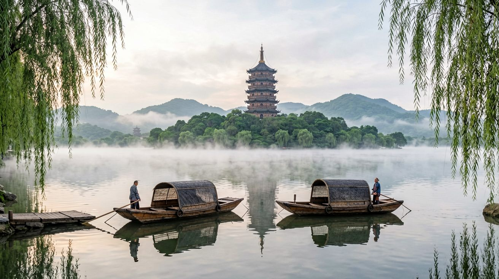
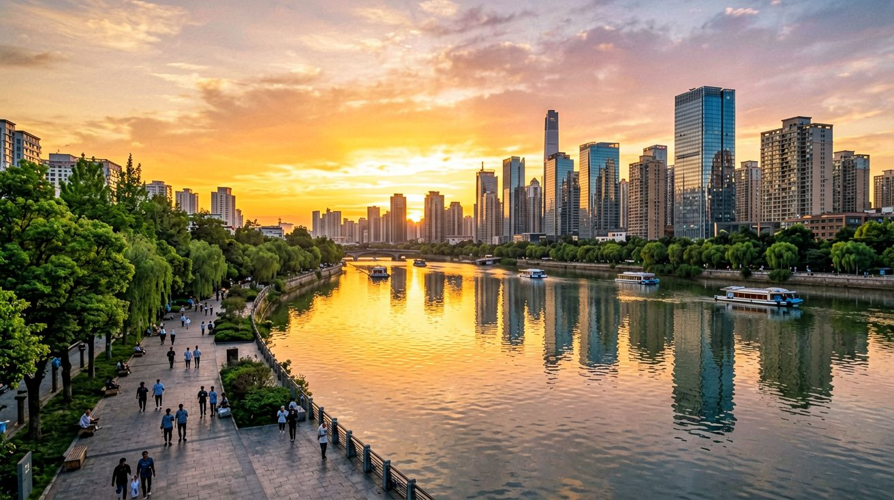
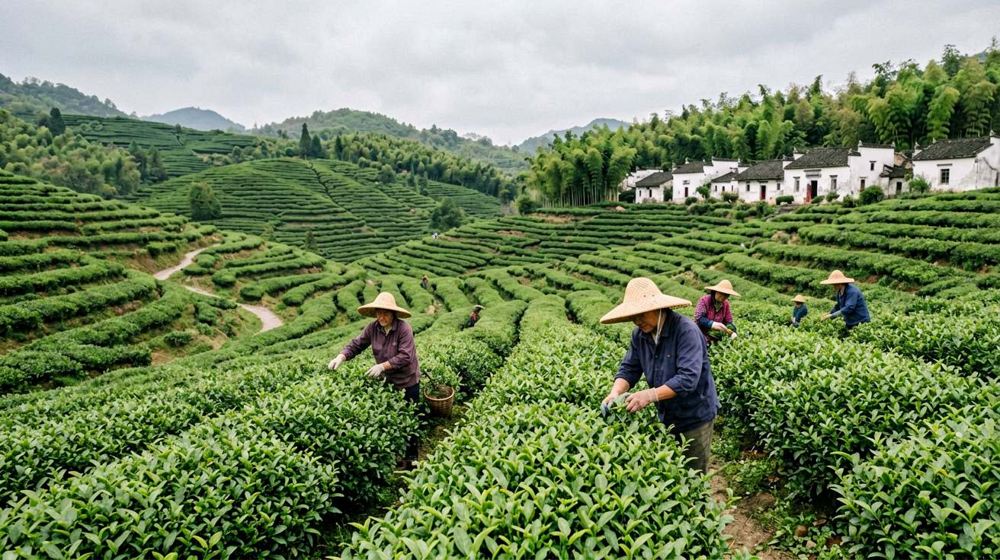
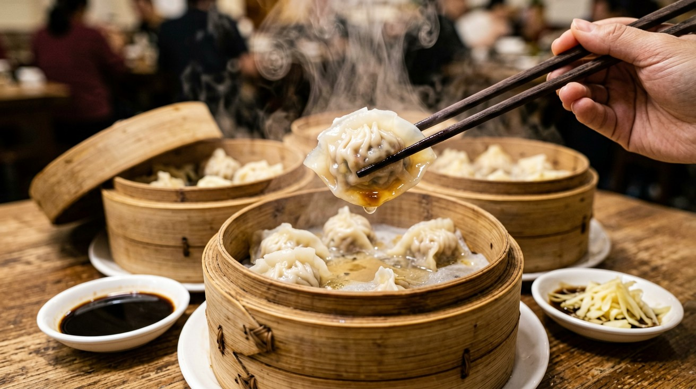
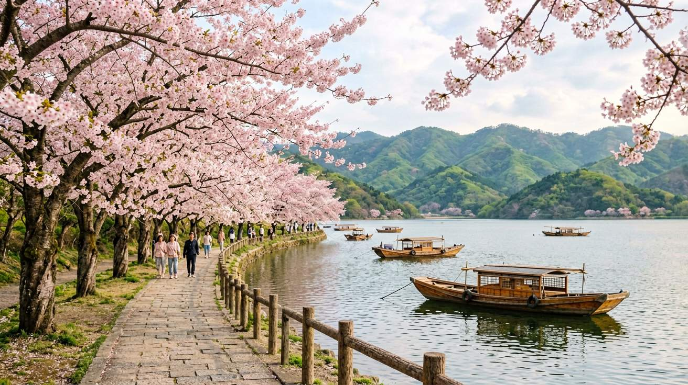

Last updated: June 2026.
Not every trip to China needs to be a month-long expedition. If you have one week and want to experience two sides of China — the futuristic metropolis and the serene water-town culture — Shanghai and Hangzhou make a natural pair. They are only about 170 kilometers apart, connected by high-speed trains that take 45 minutes to an hour. In seven days you can explore Shanghai's skyline, eat your way through the French Concession, and spend full days wandering around Hangzhou's West Lake and tea plantations. This itinerary keeps the pace relaxed while hitting the highlights of both cities.
This trip works especially well as a standalone vacation, a stopover on a longer Asia tour, or a follow-up to a Beijing trip. Shanghai has two international airports with direct flights to most major cities worldwide, so you can fly in and out without backtracking.

Shanghai and Hangzhou have a relationship that goes back centuries. In imperial times, Hangzhou was the southern capital of the Song dynasty and one of the greatest cities in the world. Marco Polo called it "the city of heaven." Shanghai, by contrast, was a fishing village until the 19th century, when it exploded into an international port. Today the two cities complement each other perfectly: Shanghai is speed, glass, and ambition. Hangzhou is tea, temples, and hills.
The practical case is equally strong. The Shanghai–Hangzhou high-speed line runs dozens of trains daily, with departures every 10 to 15 minutes during peak hours from Shanghai Hongqiao Railway Station. A second-class ticket costs about 73 yuan, and the journey is short enough that you can commute between the two cities if you want to base yourself in one place. Most travelers, however, will enjoy splitting their stay: four nights in Shanghai, three in Hangzhou.
This itinerary assumes you fly into Shanghai and fly out from the same city. On Day 4 you take the train to Hangzhou, and on Day 7 you take the train back to Shanghai for your departure. If your flight leaves from Hangzhou Xiaoshan Airport instead, simply reverse the order or adjust accordingly.

Day 1 — Arrival and the Bund. Most international flights land at Shanghai Pudong International Airport. From there, take the Maglev train to Longyang Road station — it hits 430 km/h and covers the 30-kilometer stretch in about 8 minutes. Transfer to metro line 2 to reach central Shanghai. If you land at Hongqiao Airport, you are already connected to the metro on lines 2 and 10 and can be in the city center within 30 minutes.
Once you drop your bags, head to the Bund for the classic Shanghai introduction. The 1.5-kilometer promenade along the Huangpu River gives you the city's most iconic view: 1920s neoclassical buildings on one side, the sci-fi Pudong skyline on the other. Go an hour before sunset and watch the city transition from day to night as the lights come on across the river. For dinner, walk into the nearby streets behind the Bund and find a restaurant serving Shanghainese classics — braised pork belly, xiaolongbao, and scallion-oil noodles.
Day 2 — Old City and Pudong. Start in the old city area around Yu Garden. The garden itself, built in 1559, is a Ming-dynasty jewel of rock gardens, koi ponds, and zigzag bridges. You will need about an hour to see it properly. The surrounding Yuyuan Bazaar is a restored shopping area that sells everything from jade carvings to tea — touristy, yes, but a convenient place to buy gifts.
In the afternoon, cross the river to Pudong. Go up one observation deck: the Shanghai Tower (632 meters, tallest in China) or the Shanghai World Financial Center with its glass-floored observation deck on the 100th floor. Tickets cost roughly 180 to 200 yuan per person. Buy them at the counter or save a few yuan by booking through Trip.com. After the view, walk around the Lujiazui financial district to see the strange and wonderful architecture up close, then take the metro back across the river for the evening.
Day 3 — The French Concession. The former French Concession is Shanghai's most walkable and photogenic neighborhood. The streets here — Wukang Road, Anfu Road, Wulumuqi Road — are lined with plane trees planted by the French a century ago, and the low-rise lane houses are now filled with independent coffee shops, design stores, and small galleries. This is not a day of major sights; it is a day of wandering. Stop where you want, sit in a park, and let Shanghai's slower side reveal itself.
In the evening, consider the Bund Sightseeing Tunnel — not so much for the tunnel itself, which is a kitschy light show, but as a novelty way to cross the river. Or take a Huangpu River cruise from the ferry terminal near the Bund for views of both riverbanks lit up at night. Tickets for the cruise are about 120 to 150 yuan and can be bought at the dock.
Day 4 — Last Morning in Shanghai, Then to Hangzhou. Dedicate your last Shanghai morning to whatever you missed. Options: the Shanghai Museum at People's Square for ancient bronzes and ceramics (free, but closed on Mondays), the Propaganda Poster Art Centre in a basement on Huashan Road for a quirky look at 20th-century Chinese design, or the Moganshan Road art district for contemporary galleries in converted warehouses.
By early afternoon, head to Shanghai Hongqiao Railway Station and catch a G-class train to Hangzhou. The ride takes about 45 to 60 minutes. You will pull into Hangzhou East Railway Station, which is connected to metro lines 1 and 4. Check into your hotel — ideally near West Lake or in the Qingbo Gate area — and spend the evening walking along the lakeshore as the sun sets behind the pagodas.

Day 5 — West Lake, the Classic Circuit. West Lake is not a single attraction — it is a landscape of causeways, islands, pagodas, and gardens spread across about 6.5 square kilometers. The classic way to experience it is to walk or cycle the perimeter. The full loop is roughly 15 kilometers, which takes about four hours on foot or two hours by bike. You can rent a public bicycle through the Hello Bike or Meituan Bike apps, which work the same way as dockless bike-sharing anywhere in China.
Do not try to see everything in one day. Pick a segment: the Su Causeway on the west side is the most beautiful, with six arched bridges and weeping willows trailing into the water. Start at the north end near the Yue Fei Temple and walk south for about 2.8 kilometers. Along the way you will pass park benches, small pavilions, and views across the lake that change every few hundred meters. At the south end, visit the Leifeng Pagoda — a reconstructed pagoda with an elevator that takes you to the top for the definitive West Lake panorama. Entry is 40 yuan.
For lunch, find a restaurant serving Hangzhou's signature dishes: Dongpo pork (red-braised pork belly named after the Song-dynasty poet Su Dongpo), West Lake vinegar fish, and longjing shrimp — shrimp stir-fried with the local dragon-well green tea leaves. Lou Wai Lou, near the northern shore of the lake, has been serving these dishes since 1848 and remains the city's most famous restaurant.
Day 6 — Tea and Temples. Hangzhou is the home of longjing (dragon well) tea, one of China's most famous green teas. Spend the morning in the Longjing Tea Village, about 8 kilometers southwest of West Lake. You can reach it by bus 27 from the city center. The village sits in a valley of terraced tea fields that climb the hillsides. Walk through the rows, watch the tea pickers at work in spring and early summer, and stop at a tea house where a farmer will brew you a cup of the latest harvest — usually for 30 to 50 yuan per person. There is no hard sell to buy tea, though most places will offer it.
In the afternoon, visit Lingyin Temple, one of the most important Buddhist temples in China. Founded in 328 CE, it sits in a forested valley northwest of the lake. The temple complex includes several halls with massive Buddha statues, and the surrounding Feilai Feng grottoes contain over 300 stone carvings dating from the 10th to 14th centuries. Entry to the scenic area is 45 yuan, with an additional 30 yuan to enter the temple itself. Give yourself at least two hours here — the setting, with moss-covered rocks and ancient trees, is as much the attraction as the temple buildings.
Day 7 — Hefang Street and Departure. On your last day, head to Hefang Street near Wushan Square. This pedestrian street has been a commercial thoroughfare since the Southern Song dynasty, and while today's version is heavily restored, it still gives a sense of old Hangzhou. The street is lined with traditional medicine shops, tea houses, and stalls selling local snacks — try the dingsheng cake, a sweet rice cake with red bean paste that was supposedly eaten by Song-dynasty soldiers before battle.
From Hefang Street, walk uphill to the City God Pavilion at the top of Wushan Hill for a final view over Hangzhou's rooftops and the lake beyond. Then make your way back to Hangzhou East Railway Station for the train to Shanghai. Give yourself at least three hours between arriving at Shanghai Hongqiao and your flight departure time — Hongqiao Railway Station and Hongqiao Airport are in the same complex, connected by a covered walkway, but security and immigration lines at the airport can be long.

Shanghai and Hangzhou belong to different culinary traditions within Chinese cuisine. Shanghai food is characterized by the use of soy sauce, sugar, and oil — a style called "red cooking" that produces rich, dark, slightly sweet dishes. Hangzhou food is lighter, emphasizing the natural flavors of fresh ingredients with minimal heavy seasoning.
In Shanghai, do not leave without trying: xiaolongbao (soup dumplings with thin, pleated skins), shengjianbao (pan-fried pork buns with a crispy bottom and hot broth inside), hongshao rou (red-braised pork belly), congban mian (scallion-oil noodles — a deceptively simple street food staple), and hairy crab in autumn. The best xiaolongbao in the city is debated endlessly, but Jia Jia Tang Bao on Huanghe Road and the original Nanxiang Steamed Bun Restaurant near Yu Garden are the two names that come up most often.
In Hangzhou, the must-try dishes are: Dongpo pork, West Lake vinegar fish (a whole grass carp in a sweet-and-sour sauce), longjing shrimp, and pianerchuan noodles (a hearty noodle soup with pickled vegetables, pork, and bamboo shoots). For a casual meal, stop by Zhiweiguan, a century-old chain with several branches around West Lake that serves reliable versions of all the Hangzhou classics at reasonable prices.
A practical tip for both cities: use Dianping, the Chinese equivalent of Yelp, to find well-reviewed restaurants. The app is in Chinese, but you can use the Alipay mini-program version with screenshot translation tools to navigate the ratings and photos. Most mid-range and upscale restaurants have picture menus, so ordering is rarely a problem even without Chinese reading skills.

Best time to go. The ideal months for Shanghai and Hangzhou are April, May, October, and November. Spring brings mild temperatures and blooming gardens — Hangzhou's West Lake in cherry blossom season is unforgettable. Autumn is dry, crisp, and golden, especially in the tea hills around Hangzhou. June and July are the rainy season, with frequent downpours and high humidity. August is the hottest month, often reaching 35°C (95°F) or higher. January and February are cold and damp, though tourist numbers are low and prices drop.
Getting around. Both cities have excellent metro systems. Shanghai's network is one of the largest in the world, with 19 lines covering nearly every part of the city. Hangzhou's metro is smaller but growing, with lines that connect the railway station, West Lake, and major attractions. In both cities, you can use Alipay's transport QR code to pay for metro and bus rides — scan the code at the gate, and the fare is deducted automatically. For taxis, use the Didi app (available in English within the Alipay app) rather than hailing cabs on the street, which can be difficult during rush hour or in the rain.
Where to stay. In Shanghai, the Jing'an and former French Concession areas offer the best balance of walkability, dining, and atmosphere. In Hangzhou, stay near the lake. The area around Hubin Road and Qingbo Gate puts you within walking distance of the water, the Leifeng Pagoda, and several metro stations. Hotels near West Lake book up fast during weekends and public holidays, so reserve early if your dates are fixed.
What to pack. Comfortable walking shoes are essential — you will easily walk 15,000 to 20,000 steps a day in both cities. Bring a VPN installed and tested before departure, as many websites and apps you rely on (Google Maps, Gmail, Instagram) are not accessible in China. For navigation, download Amap or Apple Maps before you arrive; Google Maps is unreliable in China. A portable power bank is also useful, as much of your day — payments, navigation, translation — runs through your phone.
This one-week trip delivers two very different Chinas in a single, easy loop. Shanghai shows you where the country is going. Hangzhou shows you where it has been. Together, they make one of the most rewarding short trips you can take in East Asia.
This article is based on information as of June 2026.
Sources
Schedules, fares, and opening hours may change. Verify details before your trip.